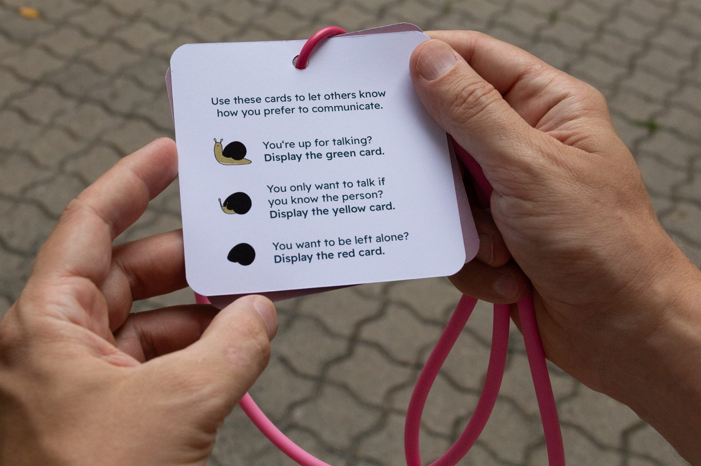

Communication badges offer greater accessibility to events, conferences and university to those who may struggle with non-verbal social cues. Since their first recorded use in 1995 during an Autism related conference, they have become widely adopted at Autistic-run events, or those with a high number of Autistic visitors.For my design I used a silicone lanyard to ease possible sensory irritation oftentimes caused by fabric lanyards due to their rough edges or seams. The cards can be easily flipped without the need to unclip them.
Snail Cards
Designing communication cards for neurodivergent users